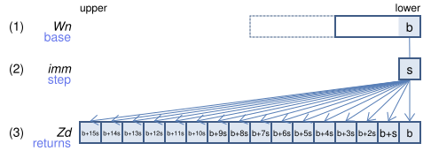
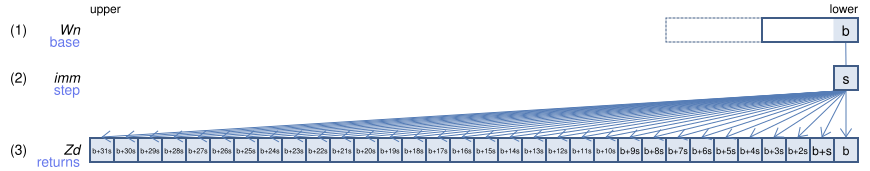
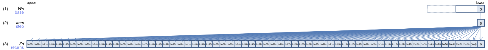
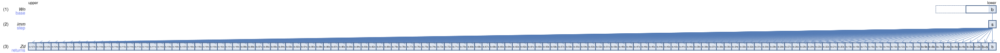
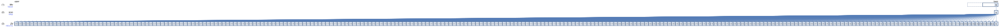

SVE Instruction List by Dougall Johnson
INDEX (scalar, immediate): Create index starting from general-purpose register and incremented by immediate
INDEX Zd.B, Wn, #imm (SVE (SME
svint8_t svindex_s8(int8_t base, int8_t step)
svuint8_t svindex_u8(uint8_t base, uint8_t step)
128-bit SVE

Fill the 8-bit lanes of (3), with values starting from (1) in the lowest lane, and incrementing by (2) for each subsequent lane. The immediate value is limited to -16 ≤ imm ≤ 15.
256-bit SVE

Fill the 8-bit lanes of (3), with values starting from (1) in the lowest lane, and incrementing by (2) for each subsequent lane. The immediate value is limited to -16 ≤ imm ≤ 15.
512-bit SVE

Fill the 8-bit lanes of (3), with values starting from (1) in the lowest lane, and incrementing by (2) for each subsequent lane. The immediate value is limited to -16 ≤ imm ≤ 15.
Larger sizes
1024-bit SVE

Fill the 8-bit lanes of (3), with values starting from (1) in the lowest lane, and incrementing by (2) for each subsequent lane. The immediate value is limited to -16 ≤ imm ≤ 15.
2048-bit SVE

Fill the 8-bit lanes of (3), with values starting from (1) in the lowest lane, and incrementing by (2) for each subsequent lane. The immediate value is limited to -16 ≤ imm ≤ 15.
Report mistakes or give feedback
Inspired by and based on the x86/x64 SIMD Instruction List by Daytime.